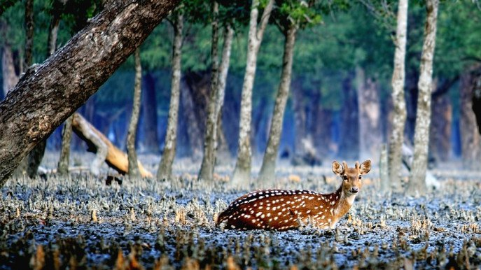
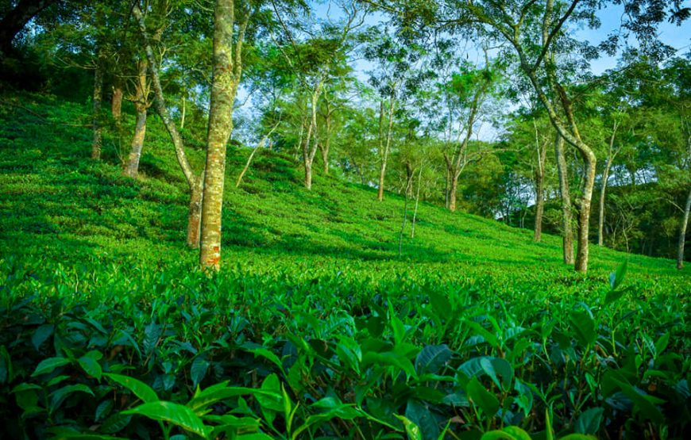

My coxbazar Travel history
 Author: Traveler ParvezMrf
Author: Traveler ParvezMrf
Coxs Bazar is a town on the southeast coast of Bangladesh. It is known for its very long, sandy beachfront,
stretching from Sea Beach in the north to Kolatoli Beach in the south. Aggameda Khyang monastery is home to
bronze statues and centuries-old Buddhist manuscripts. South of town, the tropical rainforest of Himchari
National Park has waterfalls and many birds. North, sea turtles breed on nearby Sonadia Island
Sundarbans Mangrove Forest

Author: Traveler ParvezMrf
Sundarbans is the largest mangrove forest on earth and a UNESCO world heritage site. Sundarbans is located in
between two neighboring countries. Bangladesh and India. The majority of the forest is located in
Bangladesh. It
is home to the last remaining Bengal tigers in the world and much other wildlife. The environment of
Sundarbans
is tranquilizing and visiting this forest could be a once-in-a-lifetime experience. That is why Sundarbans
come
as number one on our list of the best places to visit in Bangladesh.
Check out our Sundarbans Tour in Tiny Group for a memorable three days tour in Sundarbans Mangrove Forest
with a
tiny group of a maximum of 5 travelers to have a memorable experience of the forest.
Srimangal

Author: Traveler ParvezMrf
Srimangal is the tea capital of Bangladesh, located in the northeastern part of the country. You will find
lush green tea gardens anywhere you go here. This is one of the few places in the country where if you look
around, you may not find any other people anywhere except you. A really nice and calm place. Cycling through
the trails inside the tea plantations here could be one of the best things you can do in Bangladesh. Also
worth visiting is the Lawachhara National Park, and trek to Hamham waterfalls. You can easily spend a few
days here with nature. Srimangal comes as number three on our list of the best places to visit in
Bangladesh.